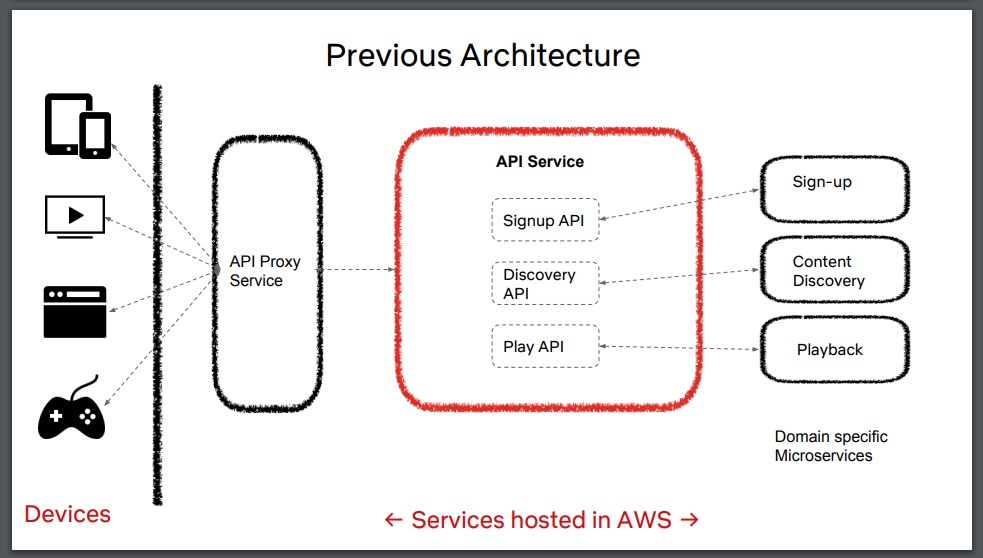
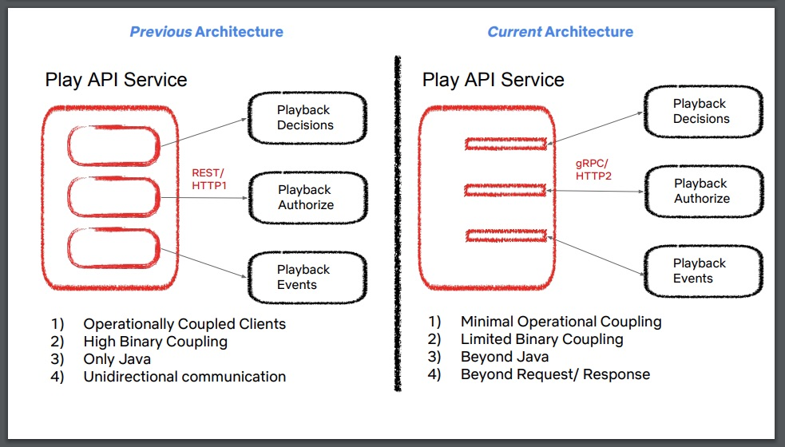
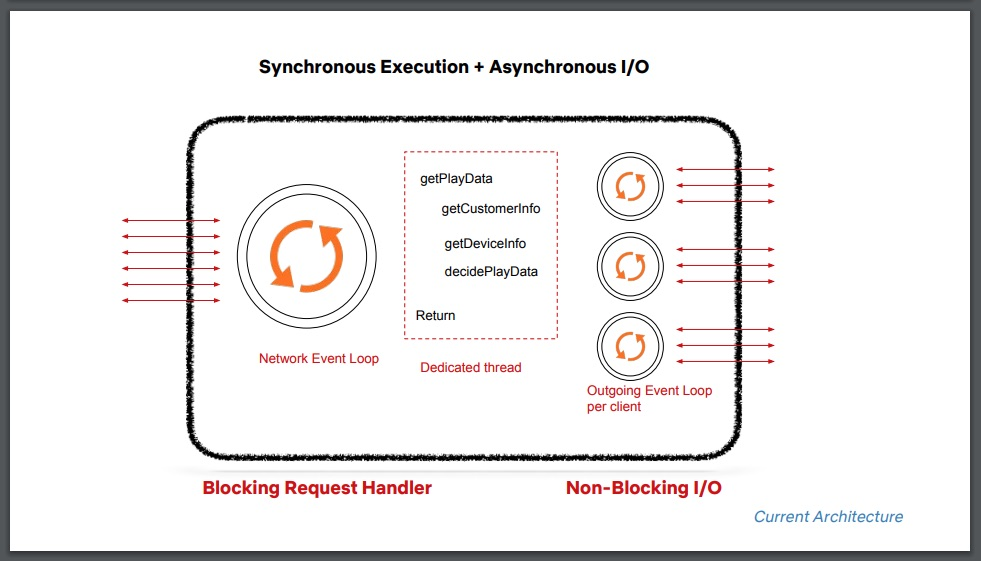
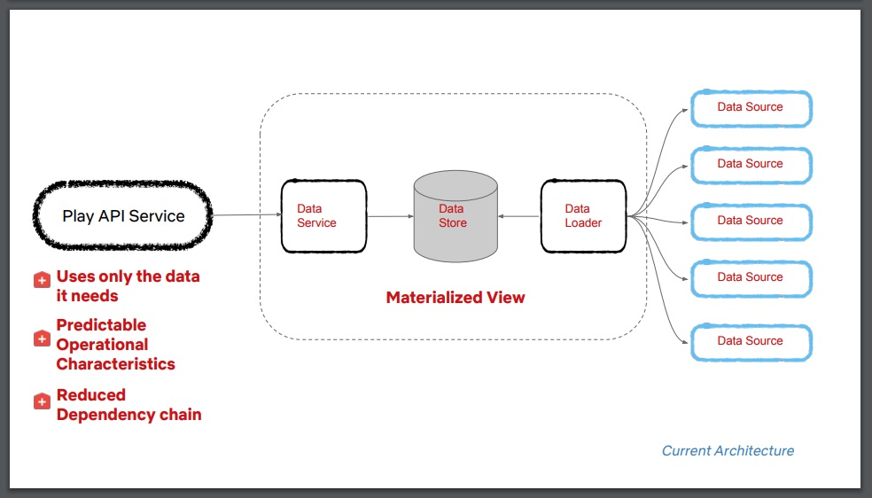

Netflix Play API：我们为什么构建了一个演进式架构？
Daniel Bryant | 平川 | 2019 年 1 月 17 日
在 QCon SF 大会上，Suudhan Rangarajan 做了题为 “Netflix Play API：我们为什么构建了一个演进式架构”的演讲。他演讲的要点包括：具有单一标识 / 职责的服务更容易升级；工程师应该在构建服务时花时间识别出需要做的核心决策，并确定这些决策是否是需要经过协商或快速试验才能做出的 “1 型” 或“2 型”决策；使用像”适应性函数（fitness functions）“这样的工具设计一个 “演进式架构” 会带来很多好处。
在演讲开始时，Netflix 高级软件工程师 Rangarajan 谈了 Netflix 在 2016 年的两个重要的业务里程碑，这两个里程碑也产生了巨大的工程影响。第一个是 2016 年 1 月发布的 “#netflixeverywhere”，使许多国家的客户可以在 Netflix 之前不可用的地方注册和观看内容。第二个里程碑是 2016 年 11 月发布的新功能 “下载和访问”（Download & Go），该功能允许用户将内容下载到设备上进行离线观看。这两次发布都给 “Play API” 带来了更大的压力，“Play API”的任务之一就是启动面向客户的内容流。这导致了几次服务中断，同时还导致了部署频率的降低和回滚次数的增加，正如 Forsgren、Humble 和 Kim 在他们的著作 Accelerate 中所述的那样，回滚是与软件交付绩效相关的关键指标。
演讲概述了 Play API 服务以前的体系结构。客户设备连接到运行在边缘的 API 代理服务（通常是 Zuul API 网关），该服务与包含多个 API（包括 Play API）的整体式 API 服务通信。反过来，这个 API 服务与特定域的微服务通信，以处理用户的下游请求。

演讲的其余部分分为三个部分，更详细地讨论了与最近增强整体式 API 服务相关的背景和指导原则。这些部分包括：服务身份——探讨服务存在的原因；识别 1 型和 2 型决策——确定哪些决策将产生重大的长期影响，像这样的决策需要大量的前期投资；可演化性——探讨如何构建能够随需求和约束的变化而演化的服务。
在服务身份部分，Rangarajan 建议工程师必须 “从为什么开始”；询问服务为什么存在以确定其职责。对于 Play API，其动机链从 Netflix 希望 “引领互联网电视革命，为全世界数十亿人带去快乐”，到最大化客户参与（从注册到流媒体），再到最终 “实现 24/7 的获取、发现和播放功能”。他提醒听众注意单一责任原则，并提醒他们在执行这一原则时应小心 “将多个身份纳入单个服务”，因为这可能导致使用低内聚和高耦合的架构反模式创建服务。因此，Play API 团队提出的第一个重大更改是将现有的整体式 API 服务划分为“单功能 API 服务” 模型。Play API 将被重新构建并部署为一个微服务——这是 “1 型” 决策。
我们相信我们的服务具有简单的单一身份。该身份关系到公司、组织、团队及其对等服务的身份，是对它们的补充。
演讲的 “1 型和 2 型决策” 部分首先援引并解释了 Jeff Bezos 的决策模型。1 型决策非常重要，具有长期的影响，因此，这些决策必须有系统地做出，并与他人进行协商。2 型决策很容易改变，没有长期的影响，因此，这些决策应由 “判断力强的个人或小组” 迅速作出。Play API 团队确定的三个 1 型决策包括适当耦合、同步与异步通信和数据架构。
有些决策非常重要且不可逆转或几乎不可逆转——单向的大门——这些决策的做出必须有条不紊、仔细、缓慢、经过深思熟虑和协商 […] 我们可以把这种类型的决策称为 1 型决策……
首先来看适当耦合，Rangarajan 指出，在设计基于微服务的架构时，实际上有两种类型的共享库：提供公共功能的库和用于服务间通信的客户端库。当使用具有公共功能的共享库（例如 “实用程序包”）时，很容易引入过多的 “二进制耦合”，这使得该库的维护和升级变得具有挑战性。使用客户端通信库还很容易引入 “操作耦合”，例如，客户端库中提供的良好的回退功能可能会消耗过多的资源并导致级联失败。如果上游服务团队只提供 Java 客户端库，那么很容易引入与通信库的 “语言耦合”。
这些问题加上对当前需求的识别和讨论，使得 Play API 团队决定积极工作，尽量减少在他们计划创建的新服务中使用共享的 “实用程序” 库。团队还决定使用 gRPC 而不是通过 JSON 和 HTTPS 进行服务到服务通信的 REST，该框架允许通过 Protocol Buffers 定义 RPC 方法和实体，并使用各种语言自动生成客户端库 /SDK。对于这种 “适当耦合” 的 1 型决策，他们的总体建议是“考虑具有双向通信的‘瘦’自动生成客户端，并最小化跨服务边界的代码重用”。

接下来，他讨论了 2 型决策、同步与异步。经过慎重考虑，团队认定，Play API 和支持服务之间除了请求 / 响应类的交互之外，不需要其他交互，因此，他们实现了一个带有非阻塞 I/O 的阻塞请求处理程序，用于发起服务间调用。

当讨论到团队遇到的第三种 1 型决策 “数据架构” 时，Rangarajan 警告说，“如果没有有意识地设计一个数据架构，数据就会变成一个庞大的整体”。在之前的 Play API 架构中，多个服务访问同一个数据源，这导致了高耦合，并减少了服务和底层数据模式的演进路径。他故意一笑，并引用 David Wheeler 的话说，“计算机科学的所有问题可以通过另一个间接层来解决”，他还指出，在讨论和分析后，Play API 团队最终引入了中间数据加载器和数据存储层，在服务和底层数据源之间有效地实现了一个物化视图。

总而言之，与 1 型决策相关的数据架构建议是：
将数据与服务隔离。至少，确保数据源通过一个抽象层访问，为以后扩展留有余地。
在这一部分的演讲中，最后一条建议是说，在做 2 型决策时，应该 “选择一条路径，实验并迭代”。在构建服务时，决策的指导原则是重点识别所面临的决策类型：
确定你的 1 型决策和 2 型决策；把 80% 的时间用于讨论和调整 1 型决策。
演讲的最后一部分重点探讨了 “总体” 架构原则，并在开始时引用了 Neal Ford、Rebecca Parsons 和 Patrick Kua 所著的 Building Evolutionary Architectures 一书中的一句话；“在众多维度中，演进式架构以支持指导式、增量式变更作为首要原则”。Rangarajan 认为，前面讨论的 1 型决策的结果最终产生了具有适当耦合的微服务架构，它为所需的演化类型提供支持。他讨论了使用 “适应性函数” 来监控和指导未来的变化，同时，他还讨论了 Play API 团队在设计架构时不可避免要做出的权衡，如简单性胜过可靠性（例如回退会导致级联问题），可伸缩性胜过吞吐量（如扩展高速缓存提高了性能，但由于最初的缓存预热需要时间，所以没有很好的扩展性）。
总之，Rangarajan 表示，在一整年里，新变更没有导致生产事故，团队接近平均每周部署 4.5 次的部署目标，而且只有两次回滚。
InfoQ 提供了演讲 “Netflix Play API：为什么我们建造一个演进式架构” 的完整视频和演讲记录。
查看英文原文：Netflix Play API: Building an Evolutionary Architecture
Copyright © 2015 Powered by MWeb, Theme used GitHub CSS.